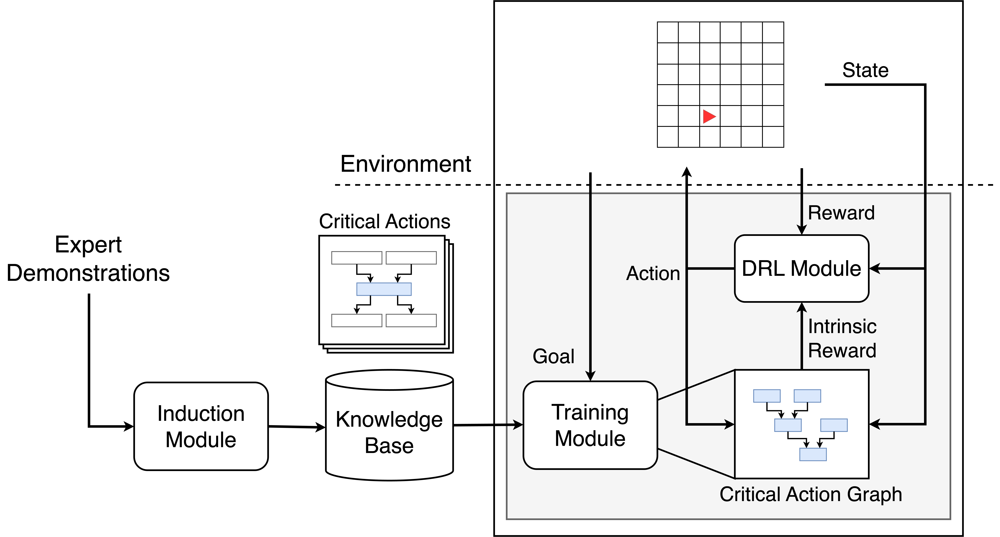

Publication
Integrating Planning and Deep Reinforcement Learning via Automatic Induction of Task Substructures
Jung-Chun Liu, Chi-Hsien Chang, Shao-Hua Sun, and Tian-Li Yu
NeurIPS Workshop on Generalization in Planning 2023
International Conference on Learning Representations (ICLR) 2024

GP with Ranging-Binding Technique for Symbolic Regression
Proceedings of the Companion Conference on Genetic and Evolutionary Computation (GECCO) 2023
Wen-Zhong Fang, Chi-Hsien Chang, Jung-Chun Liu, and Tian-Li Yu

Multi-Robot Formation Control using Collective Behavior Model and Reinforcement Learning
IEEE International Symposium on Circuits and Systems (ISCAS) 2022
Jung-Chun Liu and Tsung-Te Liu


Assessing Perceptual Load and Cognitive Load by Fixation-Related Information of Eye Movements
Sensors 2022
Jung-Chun Liu, Kuei-An Li, Su-Ling Yeh, and Shao-Yi Chien